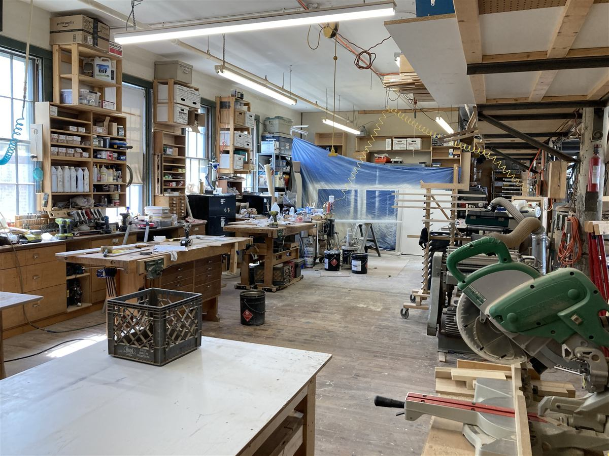

Tell the City of Boston about the cultural spaces that matter to you by making sure they're included in the 2026 Boston Cultural Space Inventory. Your input will support efforts to protect, strengthen, and expand our city's cultural infrastructure.
Be counted!
We need your help to make sure the City's data is accurate and inclusive of all of the spaces where culture happens. Better data supports better policies, resourcing, and decision-making.
If you work from, visit, support or love any kind of space in Boston where arts and culture happens, make sure it's on this map. Cultural spaces that have closed in the last 15 years are also captured here and you can use this map to tell us if any are missing.
There are three ways you can take part:
Learn more about the project and frequently asked questions.
Any buildings or spaces where arts and culture is happening — be it daily, on the weekends, or once a month. This can include arts-specific spaces like studios, galleries, music venues and theaters, but also gathering places (like public spaces or faith-based spaces), retail spaces (like bookstores or record shops), learning spaces (like art courses or schools) or food and drink spaces (like bars or restaurants) that are sites for cultural activity.
If you feel a place is part of how you experience arts and culture in Boston — make sure it's on the map!

If you would like to stay updated about this project, or be part of future conversations about cultural space in Boston, please provide your contact information below.
This information may be used to get in touch with you about the spaces you've added to the map, or to share project updates and other feedback opportunities with you.
Are you someone who knows a lot about this space (an owner, operator, staff or volunteer member)? Once you add it to the map, you'll get a link to our deep-dive questions, already tied to this space.
Your space has been added to the map!
Do you know a lot about this space?
If you are an owner, operator, staff or volunteer member, please answer our
deep-dive questions. Your answers will be linked to this space automatically.